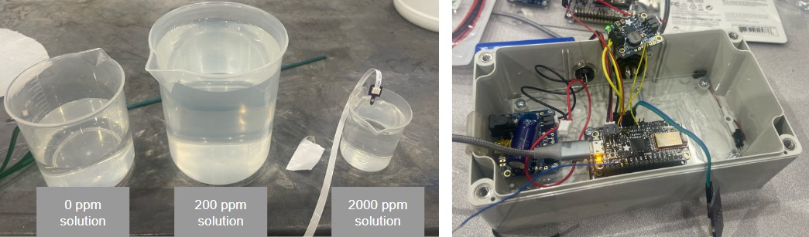
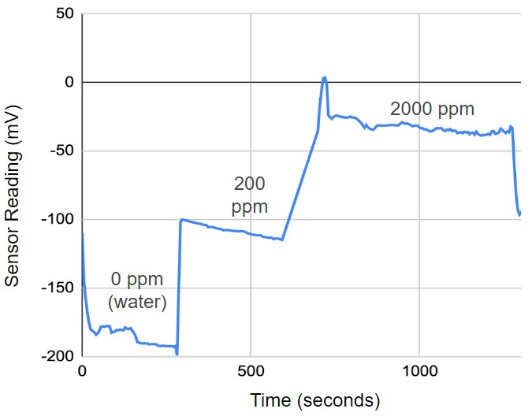
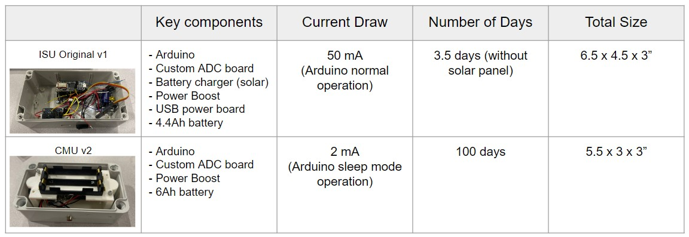

Sensor Overview
Overview of the nitrate sensor that was developed in Iowa State University.
Discussion of size, sensor reading, data logger electrical system, logging firmware.
Discussion of contact abrasion.
Discussion of manual insertion for comparison.
Calibration
Overview of the calibration process with different ppm concentration.

Discussion of the calibration process for the plots below.

Voltages at varying concentration
Data Logger Schematic and Firmware
Overview of the analog amplifier circuit and the power management.
Specifications for battery life, current draw, sample frequency.
Discussion of the Arduino firmware for logging and power saving.

Data Logger Deployment Box
Overview of the deploy mechanism that can be interfaced through PC or manual button.
Design to be sliding out away from the xArm. Designed with 4 bar link and latched to save power draw while inactive.
Wire management on coil setup to prevent tangling.
Sensor Sleeve
Design of the Sensor Sleeve to protect the sensor membrane.
Field Data for Corn
Discussion of the data collected for the 3 data logger over 30 days.
Observation of diurnal readings.
Discussion of sensor fall out as corn grows.